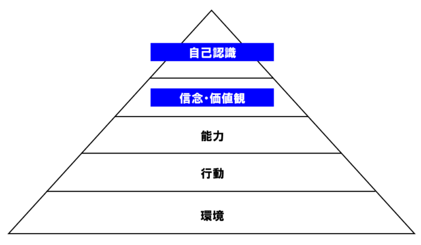

妻から突然離婚したいと言われた理由とは？対応方法とやってはいけないこと
2022-06-22 by 内田裕之
- 「妻から突然離婚したいと言われてしまい、どうしたらいいか分からない」
- 「もう一度妻とやり直したい」
この記事はそんな方へ向けて書いています。
こんにちは。
人生の悩みを天理教の教えで解決しようと情報発信している、うっちゃんです。
妻から突然「離婚したい」と言われると時が止まったように固まり、頭が真っ白になる方も多いと思います。
しかし、離婚したいと言ってくる背景には、必ず何かしらの理由があります。
そして離婚理由は突発的なものではなく、結婚生活の中でゆっくりと生まれたものがほとんどです。
この記事では妻から離婚したいと言われた理由と対応方法、やってはいけないことをお伝えします。
あなたが幸福な人生を歩むきっかけになれば嬉しく思います。
■目次
妻から離婚したいと言われた理由
妻から離婚したいと言われた理由は、結婚生活の中でゆっくりと生まれたものがほとんどです。
しかし、一般的に男性はコミュニケーション能力が女性よりも低いため、その理由に気づくことはありません。
ここでは妻から離婚したいと言われる理由を紹介します。
妻を大事にできていないから
結論から言うと、妻を大事にできていないからです。
「ちゃんと働いてお金を入れていた！」「家事も手伝うことはあったぞ！」と思われるかもしれません。
しかし、現実として妻は「私を大事にしてくれている」と思わなかったから離婚したいと言い出したのではないでしょうか？
実は妻をないがしろにするような行動や言動を無意識にしていた可能性があります。
以下では具体例を紹介します。
意見を聞いてくれないから
妻「今日の昼ごはんは何にしようか？」
夫「なんでもいいよ」
こんな会話を普段からしていませんか？
他にも意見や要望を言われたとき、「あ、そう」「それでいいんじゃない」と返事をしていませんか？
妻は会話をしたかった可能性が高いです。
例えば次のように返せば話題が広がったと思います。
夫「今日は麺類を食べたいんだけど、どうかな？」
夫「昨日はカレーだったから、あっさりしたものがいいな」
会話のキャッチボールを通じてお互いの気持ちを楽しみたいのに「なんでもいいよ」ではブツンと切れてしまいます。
妻の不満は小さな会話から始まっているのです。
共感してくれないから
夫がソファで横になってテレビを見ているときに妻が話しかけました。
妻「今日ね、スーパーでお肉が安かったから久しぶりに牛肉を買っちゃった。」
夫「へ〜、そうなんだ。で、晩ごはんはなに？」
夫の返事は、まるで妻に興味がないように思われてしまいます。
妻が最もほしいのはお金やプレゼントではありません。
「共感」という心の栄養が大事なのです。
「わかる、わかる」と共感してもらえることで妻は毎日を明るく楽しく過ごせます。
味方でいてくれないから
例えば息子が妻に「うるせえクソババア」なんて言ったとき、あなたはどうしていますか？
よく言ったと息子を褒めますか？
黙って様子を見ますか？
「母さんになんてことを言ってるんだ、出てけバカ野郎！」と本気で怒っていますか？
結婚すると妻が夫に嫁ぐケースが多いと思います。
つまり妻はひとりで夫の家族に入るわけです。
嫁姑ケンカでは妻を守っているでしょうか？
親子喧嘩では妻を大事にするように叱っているでしょうか？
夫のあなただけが妻の味方となり、守ることができるのです。
記念日を祝ってくれないから
妻の誕生日を祝っていますか？
コンビニスイーツでもいいから、買っていくだけでも喜ばれると思います。
妻を大事にする行動をこまめに見せることが大事なのです。
なぜかと言うと、人は行動と言動で相手の考えを読みとるからです。
下図はニューロロジカルといって、人の行動を支配するものです。
（参考：ニューロロジカル）
上位の思考部分が下位の行動や環境に影響を及ぼします。
妻の味方をしない言動や記念日を祝わない行動から、「妻を大事に思っていないんだ」という価値観がバレるのです。
少なくとも妻は大事にされていないと感じたので離婚を言い出したのです。
離婚したいと言われたときの対応方法
妻とは離婚したくない、もう一度やり直したいと考える方も多いと思います。
そこで対処方法を紹介します。
最初の対応を間違えると取り返しのつかないことにもなりますので、ご注意ください。
離婚しない意思を伝える
まずは離婚しない意思を伝え、妻が「仮に離婚したら〜」という会話にも乗らないでください。
あいまいな返事をしたり、何もしないまま離婚届にサインしてしまうと取り返しのつかないことになります。
また、「仮に離婚したら〜」の話に乗ると、離婚に同意していたとして「夫婦破綻状態」だったと主張されるリスクが生じます。
離婚したい理由を聞く
離婚したい理由を妻に直接聞きましょう。
妻が話してくれないときは自分で理由を考えます。
相手の反応は、自分のコミュニケーションの成果です。
必ずあなたに原因があります。
自分のあやまちを見つめるのは苦しいこともありますが、妻ともう一度やり直すために真摯に向き合います。
話し合う時間をつくる
夫婦で時間をつくり、じっくり話し合いましょう。
妻の気持ちをしっかりと聞き、自分の至らなかった点を謝ります。
ここで妻の気持ちを聞くことができれば、もう一度夫婦関係をやり直すチャンスです。
なぜなら期待しない相手には何も話さないためです。
どれだけ話を引き出せるかが勝負です。
反省して行動で示す
もう一度やり直すチャンスをもらえたら、行動で示しましょう。
人の行動を支配するニューロロジカルでは、行動や言動を見て思考を見透かされます。
（参考：ニューロロジカル）
さらに黙って行動で示すのではなく、ちゃんと言葉で伝えましょう。
「愛している」はいくら言っても減るものではありませんよ！
絶対にやってはいけないこと
妻から離婚したいと言われたときに絶対にしてはならないことをまとめました。
これをやってしまうと夫婦関係は戻らないばかりか、離婚したい気持ちが一層強くなる可能性があります。
感情的になる
「勝手にしろ！」と怒って言ってしまうと離婚の話が進んでしまいます。
妻も「離婚したい」と言いにくいことを伝えたら怒鳴るような夫ともう一度やり直したいと思うでしょうか？
妻の離婚の意志はますます強固になり、取り返しのつかなくなります。
また、ふてぶてしい態度をとったり機嫌が悪くなったりするのもNGです。
感情を態度であらわす人は幼稚に見られ、妻から愛想をつかれてしまいます。
証拠もないのに浮気を疑う
確実な証拠もないのに妻の浮気を疑うのは絶対にいけません。
妻は「離婚する理由を私に押し付けようとしている」と感じて、激しく抵抗するでしょう。
話し合いをするのも不可能になってしまいます。
相手を責める
夫「お前も◯◯なところがあったじゃないか！」
こぶし同士がぶつかりあうような激しい夫婦げんかに発展してしまいます。
人は必ず至らぬ点がどこかにあります。
それをお互いにサポートしながら生活をするのが夫婦ではないでしょうか？
暴言や暴力でうったえる
暴言や暴力で相手を脅し、言う通りにしようとするのは絶対にいけません。
人間の本性は非常時にあらわれると言いますが、野蛮な人と関係を改善したいと思うでしょうか？
人間性に拒否感を持たれると妻はさらに離れようとします。
また、録音や録画で証拠をとられてしまうと離婚理由とされてしまいます。
必要以上にへりくだる
離婚と言われた途端に態度を急変させるようでは人間性を疑われてしまいます。
夫よりも立場が上だと思い、妻の要求がエスカレートする可能性もあります。
毅然とした態度で「冷静になる時間がほしい。」と伝えましょう。
身内を入れて話し合おうとする
自分が困ると味方を連れてくるような卑怯な夫と関係を修復したいとは思いません。
妻はさらに離婚の意志を強くします。
お互いに強固な態度になれば関係を修復できなくなります。
第三者の意見に流される
他人にアドバイスを求めるのはよいですが、第三者の意見に流されるのは避けましょう。
人によって立場が異なるので意見が変わってくるからです。
例えば暴力を受けていた方は別れて正解と言いますし、親は孫を見たいので離婚に反対するかもしれません。
本当に意見を聞くべき相手は妻です。
第三者のアドバイスは参考程度にとどめましょう。
天理教の教えからアドバイス
ここからは具体的に何をすればよいか、天理教の教えから考えていきます。
自分を知る
人間関係に悩む方は、相手の反応が自分のコミュニケーションの成果であると気づきましょう。
自分が原因で相手の反応が決まるのです。
原因＝ネガティブなきっかけ、とは違います。
例えば誕生日にプレゼントをすれば相手は喜びますよね。
これも私が原因で相手を喜ばせたという反応を得ています。
自分のコミュニケーションが相手に影響しているので、まずは自分がどんな働きかけを無意識にしているのか気づく必要があります。
例えば話を聞く時に腕組みをして、顔も下を向いて、返事もうなずきもしない人と話したいでしょうか？
多くの方は、そんな人と話したくありませんよね。
でも、実は自分がしている可能性があります。
無意識の自分を知ることが大事なのです。
天理教の神殿には鏡が置かれていますが、これは自分を知る大切さを説いています。
ほこりを掃除する
人間の心には8つのほこりが積もると言われています。
ほこりは人生を苦しめる利己的で身勝手な心づかいです。
経典の第七章では以下のように書かれています。
人の幸福は、その境遇に在るのではなく、人生の苦楽は、外見によって定まるのではない。
すべては、銘々の心の持ち方によって決まる。
心の持ち方を正して、日々喜び勇んで生活すのが、信心の道である。
（参考：天理教経典）
ほこり（埃）と表現されているのは、掃除さえすればきれいに払うことができるということです。
掃いても拭いても、どのようにしても除くことができない頑固な”しみ”とな異なります。
払えば取れるのが埃なのです。
親神様の教えをほおきとして、ほこりを掃除しましょう。
心を常に磨く
何にでも、いつでも積もるのがほこりです。
しかも積もるときの様子は人間の目には見えないものです。
そして油断すると、いつしか白く積んでくるのがほこりの性質です。
人間の心のほこりも同じで、ほこりのない人間は一人もいません。
そして知らずしらずのうちに積んでいることが多いのです。
人は一度決心しても、時間が立つとまわりの意見に流されたり、今の自分のままでいようとする思考が働きます。
幸福な人生を歩むためには、たえず自分の心を磨きましょう。
まとめ
妻から突然離婚したいと言われた理由は以下のとおりです。
- 妻を大事にできていないから
- 意見を聞いてくれないから
- 共感してくれないから
- 味方でいてくれないから
- 記念日を祝ってくれないから
対応方法とやってはいけないことを再度確認して、妻との関係をもう一度やり直せることをお祈りします。
まずは奥様の気持ちを聞く時間をつくり、じっくりと話し合いましょう。
今回の記事がおもしろいと感じたらぜひブログやTwitterで紹介いただけるとうれしいです。